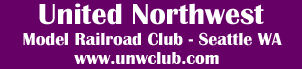

|  |
UNW Home
News
Events
Club History
The Layout
Photo Gallery
| UNW NewsThe Show Page for the 2018 27th Annual Washington State Model Train Show & Marketplace is now available!The United North West Model Railroad Club currently meets on the first Monday of the month at Galaxy Hobbies in Lynwood a 7pm. If you are interested in joining us please send a message to: join.us@unwclub.com A club officer will get back in touch with you to confirm our next meeting date as sometimes summer breaks, show seasons and holidays result in changes to our schedule. We are always looking for great people of all experience and talent-levels, so drop us a note if you are interested in joining or helping out at shows.
|